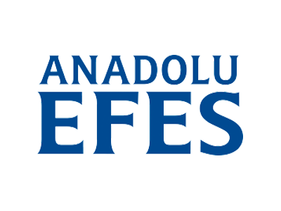
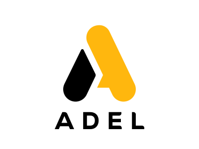
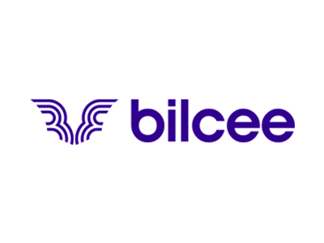
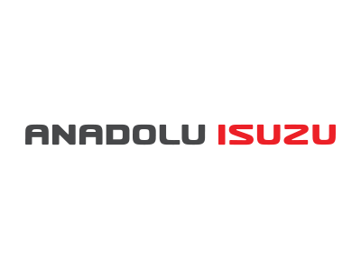
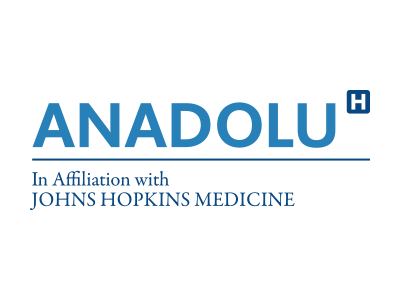

Anadolu Efes
Anadolu Grubu ile otomotiv sektörünün en köklü Japon firması Isuzu Motors Limited ve uluslararası ticaret alanında faaliyet gösteren Japon Itochu’nun ortaklığında kurulan Anadolu Isuzu, bu ortaklık yapısıyla üretimde kaliteyi ve rekabet avantajını yakalıyor. 30 yılı aşkın üretim tecrübesine sahip olan Anadolu Isuzu; hafif kamyon, kamyonet, otobüs, midibüs ve pick-up ticari araçlarının üretim ve pazarlamasını gerçekleştiriyor. Anadolu Isuzu, bu yıl ihracatta büyük başarı göstererek midibüs ihracatında 12. kez şampiyon oldu.

Adel
Türkiye’de kırtasiye denince ilk akla gelen ve bir geleneğe dönüşen Adel Kalemcilik 1969’da İstanbul-Kartal’daki fabrikasının açılışıyla faaliyete geçti. Adel, kâğıt ürünleri haricinde, gerek üretim miktarları, gerekse ürün çeşitliliği açısından Türkiye’nin ve yakın coğrafyanın en büyük kırtasiye ürünleri üreticisi konumundadır. Avrupa genelindeki ağaç cidarlı kalemlerin üretiminin yaklaşık %13’ü Adel tarafından gerçekleştirilmektedir. Anadolu Efes maçlarında taraftarları yüz boyama stantlarında ağırlayan Adel, ayrıca maskotu Adel Arısı ile birlikte Anadolu Efes Spor Kulübü’nün maç deneyimine katkı sağlamaktadır.

Bilcee
Bil Group; tekstil sektöründe üretici kimliği ile başladığı faaliyetlerine turizm ve otelcilik sektörlerini de ekleyerek büyük çaplı bir şirketler grubu olarak ticari hayatına devam ediyor. Tekstil sektöründe aktif spor giyim alanında 23 yıllık deneyime sahip Bilcee, kaliteli ürünleri, sporcu odaklı tasarımları ile sektörün önemli oyuncularından olmayı hedefliyor. İstanbul, Milano ve Moskova’da bulunan merkez ofisleriyle Avrupa ve Orta Doğu ülkelerinde hızla yaygınlaşan Bilcee, 4 kıtada 38 ülkeye ihracat gerçekleştiriyor. İstanbul’da yer alan 10.000 m2 üretim tesisinde ayda 300 bin parça üretim yapan marka, 2017 yılı itibariyle Türkiye pazarında aktif olarak yer almaya başladı. Bilcee, 2020 – 2021 sezonunda kulübümüzün resmi forma ve spor giyim partneri oldu.

Anadolu ISUZU
Anadolu Grubu ile otomotiv sektörünün en köklü Japon firması Isuzu Motors Limited ve uluslararası ticaret alanında faaliyet gösteren Japon Itochu’nun ortaklığında kurulan Anadolu Isuzu, bu ortaklık yapısıyla üretimde kaliteyi ve rekabet avantajını yakalıyor. 30 yılı aşkın üretim tecrübesine sahip olan Anadolu Isuzu; hafif kamyon, kamyonet, otobüs, midibüs ve pick-up ticari araçlarının üretim ve pazarlamasını gerçekleştiriyor. Anadolu Isuzu, bu yıl ihracatta büyük başarı göstererek midibüs ihracatında 12. kez şampiyon oldu.

Anadolu Sağlık Merkezi
Yaşam kalitesini artırmak için dünya standartlarında sağlık hizmeti sunmak hedefiyle kurulan Anadolu Sağlık Merkezi, modern tıbbın gereklerini yeni ve kapsamlı bir sağlık anlayışıyla hastalarına aktarıyor. Johns Hopkins Medicine ile eğitim ve kalitenin geliştirilmesine yönelik stratejik iş birliği içinde çalışan Anadolu Sağlık Merkezi; Onkolojik Bilimler, Kalp Sağlığı, Kadın Sağlığı ve IVF, Nörolojik Bilimler, Cerrahi Bilimler, Dahili Bilimler, Tanı ve Görüntüleme başta olmak üzere tüm branşlarda, hastalara hizmet vermekte. Anadolu Sağlık Merkezi, kulübümüz ile birlikte 6 yıldır, meme kanserinde erken tanının önemine vurgu yapan ve milyonlarca kişiye ulaşan farkındalık yaratan “Meme Kanserine Karşı Pembe Top Sahada” projesini gerçekleştirmektedir.